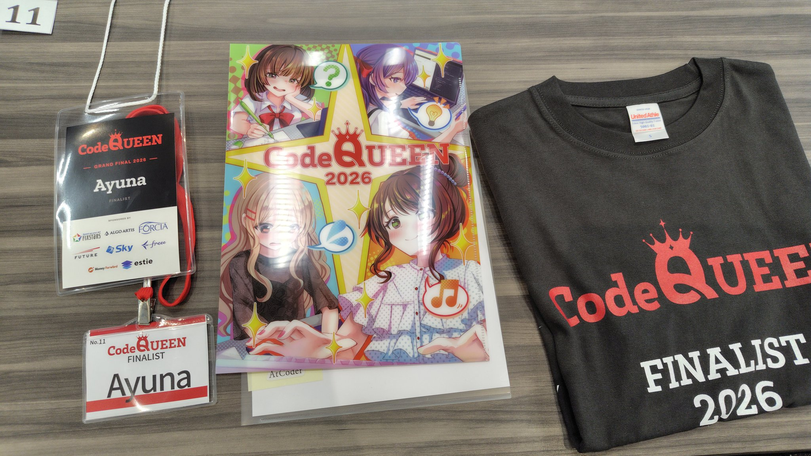
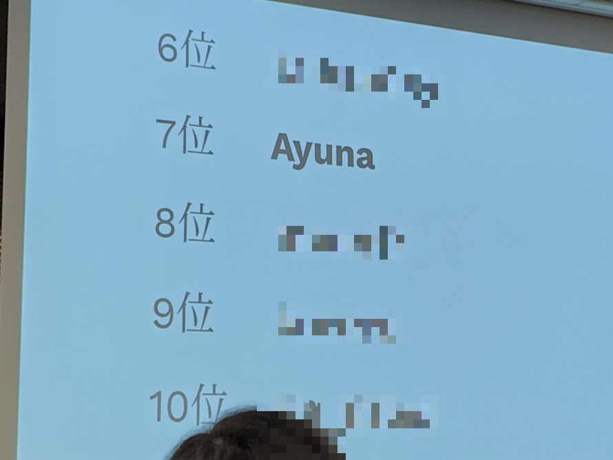
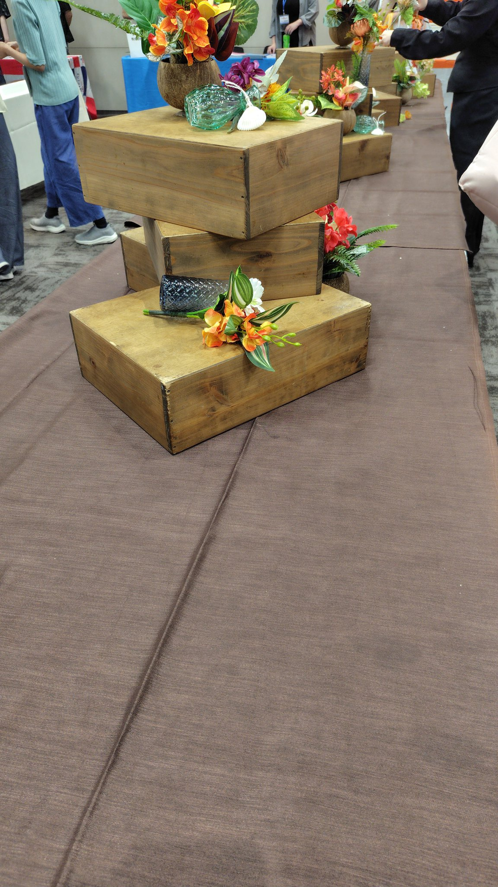

CodeQUEEN 2026に出場しました！
目次
4回目だよ
こんにちは、Ayunaです。
女性向け競プロ大会、CodeQUEENが2026年8月1日に4回目の開催です。
毎年すごく楽しませてもらっています。
ありがとうございます。
今年は決勝の人数が少し増えたので、色々な人と話すのが楽しみでした。
この記事のほとんどは開催後数日で書きましたが、書いたことに満足して2ヶ月近く公開を忘れていました。
JAG合宿の参加記を書くはるるんとPCTを見かけて思い出したので公開します。
コンテスト前てんやわんや
渋谷駅から渋谷ソラスタへの行き方、知っています。
道玄坂をひたすら登るのです。
が、行きの電車で「マークシティを経由すると涼しいよ、近いよ」という内容のポストを見かけ、そのルートに挑戦。
そして失敗。
マークシティの中で迷子になり、建物内のマップを見てもエレベーターもエスカレーターもない。
仕方ないので引き返し、なんとか会場へ到着。
予選では大ゴケをしたので左から2列目、ちょっと悲しい。
周囲には知っている人がたくさんいました。
今年も机の上には色々乗っていました。
ありがたくいただくことにします。
CodeQUEENのTシャツも4枚目ということでだんだん自分のクローゼットが黒くなっているような気がします。

いつの間にか大学生になっている人、いつの間にか社会人になっている人がいて、人生あっという間だなあという気持ちに。 知らない間に時間というものは過ぎ去るらしいね。
開始直前はとても面白かったです。 まず、斜め前のdokinさんが隣のみかんさんに消しゴムを貸してほしいと頼んでいました。 行きの道で消しゴムがないと気づき急いでコンビニで買っていたようなのですが、それは実は消しゴムではなく消しゴムのデザインをした修正テープ。
ぱっと見なら見間違えるデザインだったので周辺の人たちで大笑いでした。
おかげでちょっと落ち着きました。
開始2分前にはkenkooooさんが1枚の写真を前に表示して、「このぐらいリラックスしてやってね」と。 誰か忘れましたが、オンサイトで床に座って競プロをしていて結局その人が優勝したという写真です。
オンサイトって変なことが起きて面白いですね。
決勝コンテスト
A (0:01:14 AC)
タイピングゲーです。
FAの方とは30秒差ありますが、コンテスト時間に対する割合は小さいのでまあ許容。
C (0:07:00 AC)
B見て「分かんない！！」となりました。
焦りました。
切り替えてCを見る。
円環なので、同じ色は半分までは使うことができます。priority queueに値を入れて価値の大きい順に各色の使った個数を見て採用・不採用を貪欲に決めてOK。
FAでした。
Bをスキップしたのでそれはそう。
D (0:10:59 AC)
ジグザグするだけ。
座標の取り方に若干困惑したが、横向きに見れば連番だったので大丈夫。
FAでした2。
Bをスキップしたのでそれはそう2。
B (0:48:36 AC)
「やっぱりBは解かないとダメだ〜」と見るもやっぱり分からずEFも並列で見る。
冷静に考えたところ、仕方なく片足をつけて指示に従わないタイミングはK+1秒おきで良かったので時刻順の処理を気合いで実装。
変なペナを生んでデバッグに時間をかけてしまった、よくないところが出た。
E (1:20:18 AC)
見た瞬間、パッとセグ木上のDPが思いつく。
しかし、ただの座標圧縮では端点がうまくいかない。
そして、区間が飛んでいる時にはDPの遷移もうまくいかない。
色々お絵描きをしたりFGHチラ見したりして、無理やりうまくいく方法が思いついたので実装。
無事一発でACしたが、順位表を更新すると自分がパッと見つからず焦り。
とにかく表彰圏外だったので、何かしら1問を通さねばならないという気持ちでFに取り組んだ。
F (未AC)
すぐに、押す鍵盤に対して左から貪欲に指を割り当てることで鍵盤の押し方と指の使い方が1対1に対応することが分かったので、指の使い方を考える。
添え字が多いですが、同じ腕の指を使うか、次の腕の指を使うか、押さないかの場合分けだけなので一旦紙の上で立式してみる。
ぐちゃぐちゃになってしまった。
しかも計算回数が1e8回になり、Pythonで2秒はきつそうだし1e7回程度まで落ちるのか？とあれこれ考え、無理やり実装しようとした。
サンプルが合わず、デバッグが不可能すぎて、そのままコンテストは終わり。
反省点はBとFでの動きや考え方に尽きる。
最近、ABCのC~E問題、自分のレート帯より下の問題で実装に詰まる頻度が高くなっており、そこで焦って見落としが発生したり、気づいていても実装中に忘れ去ったりということが起きている。
ここ数ヶ月ほど考察問題やライブラリで殴れる問題ばかりをやって実装問題をABCに参加した時にしかやっていなかったからか。
(追記)
JAG参加記を書いていたはるるん、PCTを見てCodeQUEENの記事を出していない、upsolveもしていないことを思い出し、その場で復習を始めました。
Fはあっさりできてしまった。
本当になぜ本番中にできなかったのか理解できないレベル。
HについてはRinshan Solutionの全員から三者三様な解釈で同じ解法の解説をいただきました。
マージ過程を表す木、未履修だったが考え方を理解できて
感
謝
です。
表彰式
表彰式開催直前に急遽、top 5の賞金の授与をスポンサーさんが行うことになり、どの順位の人にどの企業から渡すか決めるじゃんけん大会が開催されたらしい。
それに時間がかかっているということで、コンテスト参加者の方でもKing kenkooooによる王様じゃんけんが始まった。
最初になんとなくグーを出して勝利。
王様じゃんけんでは王様の人は効率よく人を減らしたがるため、同じ手を続けて出すと予想したら見事的中。
3回目、kenkoooo様は意地悪な人ではないため3回連続同じ手はおそらく出しにくいだろうと考え、勘でチョキを出したらまた勝利。
そんな感じで残り2人のところまで勝ち残ってしまった。
ということでその相手と直接じゃんけんバトル。
勝っちゃった。
じゃんけん大会優勝。
CodeQUEENの決勝で優勝するという目標が完全に想定外の形で達成されてしまった。
一応、勝ちではあるので嬉しい。
賞金、1000円くらいほしかったなあ…
せめて、賞状代わりにkenkooooさんにサインをお願いしたらよかったか。
コンテストの方はどうかというと7位。
じゃんけんと合わせたら総合優勝にならないですかね。
なりません。
atcoderじゃんけんにも勝てるようにならなければいけません。
自分にとってはかなり悔しい結果になりました。

懇親会
今年の懇親会はスイーツ盛りだくさんでした。
完全に写真を撮るのを忘れていて、これは皿が片付けられた直後の食べ物が置かれていた形跡です。

全部一つずつ食べてみましたが、特に美味しかったのはブルーベリーのケーキでした。 飲み物もいくつかありましたが、特に温かい紅茶と小さいケーキがとてもマッチします。 ご丁寧なことにソーサーもついてきて、人生初の立ち紅茶をしました。 紅茶を持ちながらスポンサーブースを回ると、「優雅ですね」などと言われました。 落として食器を割らないかが怖かった。
4回も出ると、スポンサーの人たちにとにかく顔を覚えられていて「お久しぶりですー」を何回も言った気がする。
estieさんのブースでは、前日の別懇親会でも出題された最適化問題が出ていて、とりあえず条件を満たすようにとやってみたら30点、もう少しやってみたら31点が取れました。 当時の最高点が32点だったらしいので惜しい。 高得点だったので最後に特製トートバッグがもらえました。 デザインが良い。
懇親会延長線
rinrionさん主催の打ち上げに参加しました。
みんな、お菓子を用意しすぎ。
全部美味しかったです。
決勝がちょっと悔しくて、食欲は控えめだったかも。
でも、女子会ならではのお話がたくさんできました。
来年どうしようか
来年CodeQUEENが開催されればキリのいい(？)5回目になるので、何か面白いことが起こるか少し期待しています。
そして今まで、毎年のように人々の成長を感じてきたが、ついに来年は自分のライフステージが変わる番。
最近はとにかくやりたいことが多すぎて、自分が成長できると感じた仕事を何個か引き受けちゃって、イベントにも何個か申し込んじゃって、ギリギリ健康的だが非常に文化的な生活をしている。
充実した最後の長ーい夏休みを送ろうと思います！
(追記) 送れました！！